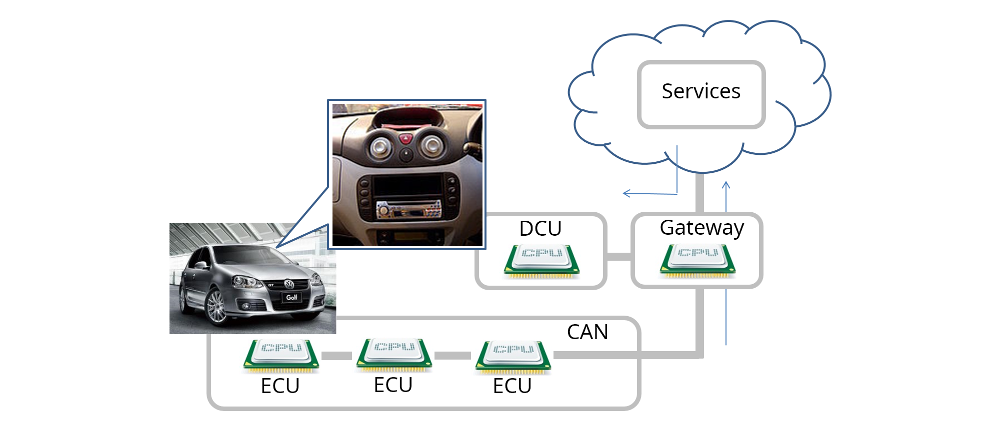
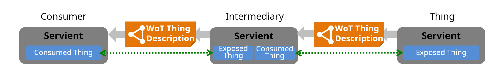
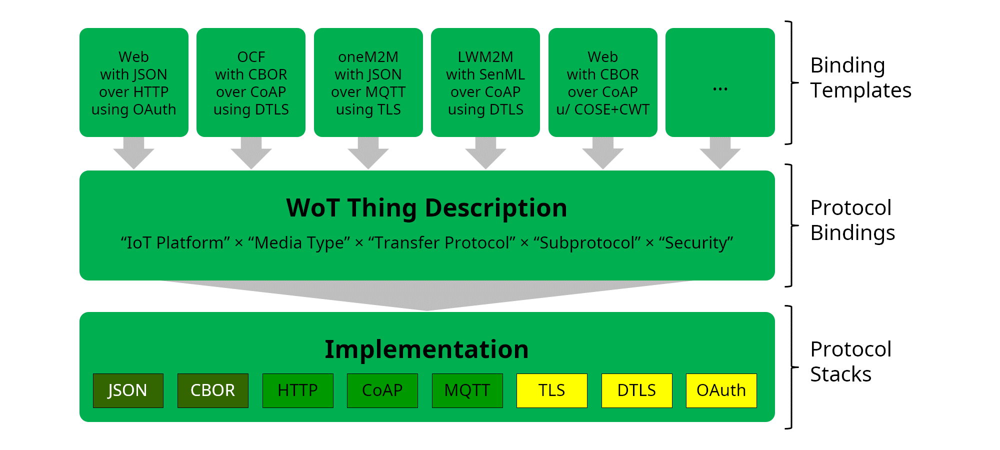
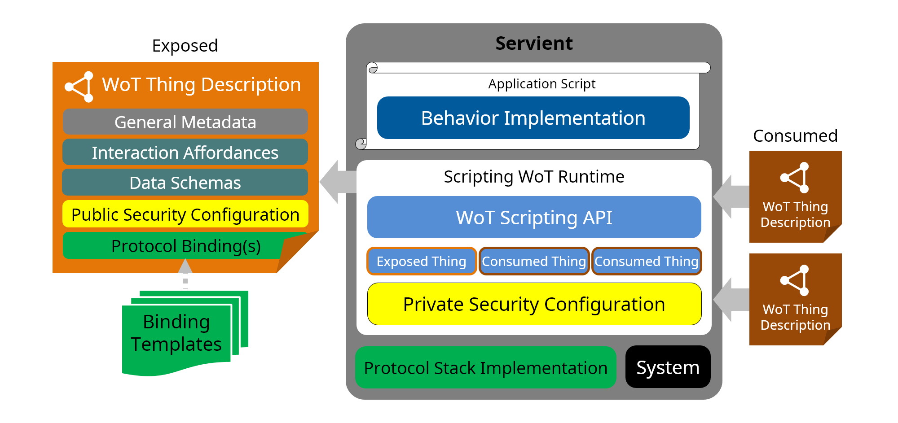
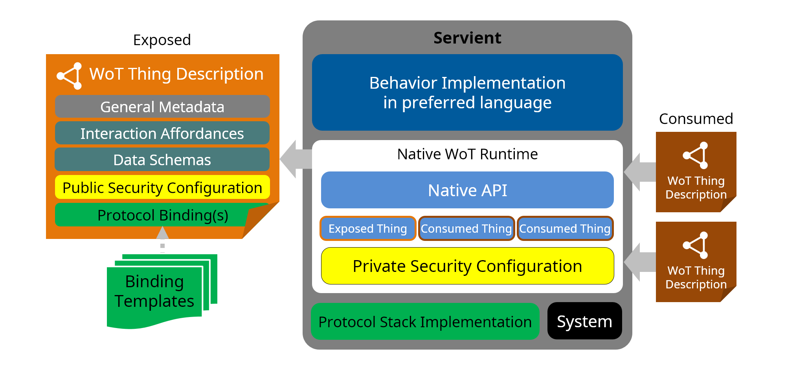
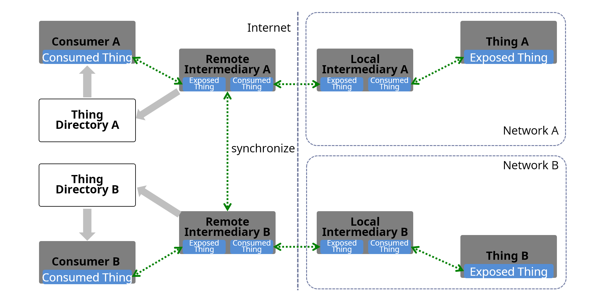

The W3C Web
of Things (WoT) was created to enable interoperability across
IoT platforms and application domains.
WoT provides mechanisms to formally describe IoT interfaces
to allow IoT devices and services to communicate with each
other, independent of their underlying implementation, and
across multiple networking protocols. In addition WoT offers a
standardized way to define and program IoT behavior.
This WoT Architecture specification describes the
abstract architecture for the W3C Web of Things. It is
derived from a set of requirements that were derived from use
cases for multiple application domains. The architecture can be
mapped onto a variety of concrete deployment scenarios, several
example patterns of which are given.
This specification is focused on the scope of W3C WoT standardization,
which is broken down into so-called building blocks. It
introduces the four initial WoT building blocks, which are
defined and described in detail in separate specifications, and
explains their interworking:
The WoT Thing Description is the central building
block, as it allows to describe the metadata and network-facing
interfaces of Things.
The informational WoT Binding Templates provide
guidelines on how to define so-called Protocol Bindings for the
description of these network-facing interfaces and provides
examples for a number of existing IoT ecosystems and
standards.
The optional WoT Scripting API enables the
implementation of the application logic of a Thing using a
common JavaScript API similar to the Web browser APIs. This
simplifies IoT application development and enables portability
across vendors and devices.
The WoT Security and Privacy Considerations
represent a cross-cutting building block, which should be
applied to any system implementing W3C WoT. It focuses on the
secure implementation and configuration of Things.
This specification also covers non-normative architectural
aspects and conditions for the deployment of WoT systems. These
guidelines are described in the context of deployment
scenarios.
Overall, the goal is to preserve and complement existing IoT
standards and solutions. In general, W3C WoT is designed to
describe what exists rather than to prescribe what to
implement.
Status of This Document
This section describes the status of this document at
the time of its publication. Other documents may supersede this
document. A list of current W3C publications and the
latest revision of this technical report can be found in the
W3C technical reports
index at https://www.w3.org/TR/.
Editor's note: The
W3C WoT WG is asking for feedback
Please contribute to this draft using the
GitHub
Issue feature of the WoT
Architecture repository. For feedback on security and
privacy considerations, please use the WoT Security and
Privacy Considerations repository to file issues, as they
are cross-cutting over all our specifications.
This document describes an abstract architecture design.
However, there is a
preliminary implementation report which describes concrete
implementations based on the associated WoT Thing Description
specification. The Working Group seeks implementation feedback,
having set the requirement of at least two implementations of each
feature as the exit criteria for the Candidate Recommendation
phase. The group aims to obtain reports from one TD producer and
one TD consumer for each feature if applicable. For details,
including definitions of implementation, TD producer, and TD
consumer, see the
preliminary implementation report.
This document was published by the Web of Things Working Group as
a Candidate Recommendation.
This document is intended to become a W3C Recommendation.
GitHub
Issues are preferred for discussion of this specification.
Alternatively, you can send comments to our mailing list.
Please send them to public-wot-wg@w3.org
(archives).
W3C publishes a
Candidate Recommendation to indicate that the document is believed
to be stable and to encourage implementation by the developer
community. This Candidate Recommendation is expected to advance to
Proposed Recommendation no earlier than 13 June 2019.
Publication as a Candidate Recommendation does not imply endorsement
by the W3C
Membership. This is a draft document and may be updated,
replaced or obsoleted by other documents at any time. It is
inappropriate to cite this document as other than work in
progress.
This document was produced by a group operating under the
W3C Patent Policy.
W3C maintains a
public list
of any patent disclosures made in connection with the
deliverables of the group; that page also includes instructions
for disclosing a patent. An individual who has actual knowledge
of a patent which the individual believes contains Essential
Claim(s) must disclose the information in accordance with
section
6 of the W3C
Patent Policy.
The goals of the Web of Things (WoT) are to improve
the interoperability and usability of the Internet of Things
(IoT). Through a collaboration involving many stakeholders over
the past years, several building blocks have been identified
that address these challenges. The first set of WoT building
blocks is now defined:
the Web of Things (WoT) Security and Privacy
Considerations [wot-security].
This specification serves as an umbrella for W3C WoT specifications and
defines the basics such as terminology and the underlying
abstract architecture of the W3C Web of Things. In
particular, the purpose of this specification is to
provide:
a set of use cases in §
4.
Use Cases that lead to the W3C WoT Architecture,
As well as sections marked as non-normative, all authoring
guidelines, diagrams, examples, and notes in this specification
are non-normative. Everything else in this specification is
normative.
The key words MAY, MUST, and SHOULD in
this document are to be interpreted as described in BCP 14 [RFC2119]
[RFC8174]
when, and only when, they appear in all capitals, as shown
here.
3.
Terminology
This section is normative.
This specification uses the following terms as defined here.
The WoT prefix is used to avoid ambiguity for terms that are
(re)defined specifically for Web of Things concepts.
Action
An Interaction Affordance that allows to invoke a
function of the Thing, which manipulates state (e.g.,
toggling a lamp on or off) or triggers a process on the Thing
(e.g., dim a lamp over time).
Binding Templates
A re-usable collection of blueprints for the
communication with different IoT platforms. The blueprints
provide information to map Interaction Affordances to
platform-specific messages through WoT Thing Description as
well as implementation notes for the required protocol stacks
or dedicated communication drivers.
to
consume a Thing
To parse and process a TD document and from it create a
Consumed Thing software abstraction as interface for the
application in the local runtime environment.
Consumed Thing
A software abstraction that represents a remote Thing
used by the local application. The abstraction might be
created by a native WoT Runtime, or instantiated as an object
through the WoT Scripting API.
Consumer
An entity that can process WoT Thing Descriptions
(including its JSON-based representation format) and interact
with Things (i.e., consume Things).
Digital Twin
A digital twin is a virtual representation of a device or
a group of devices that resides on a cloud or edge node. It
can be used to represent real-world devices which may not be
continuously online, or to run simulations of new
applications and services, before they get deployed to the
real devices.
Domain-specific
vocabulary
Linked Data vocabulary that can be used in the WoT Thing
Description, but is not defined by W3C WoT.
Edge
device
A device that provides an entry point into enterprise or
service provider core networks. Examples include gateways,
routers, switches, multiplexers, and a variety of other
access devices.
Event
An Interaction Affordance that describes an event source,
which asynchronously pushes event data to Consumers (e.g.,
overheating alerts).
to
expose a Thing
To create an Exposed Thing software abstraction in the
local runtime environment to manage the state of a Thing and
interface with the behavior implementation.
Exposed Thing
A software abstraction that represents a locally hosted
Thing that can be accessed over the network by remote
Consumers. The abstraction might be created by a native WoT
Runtime, or instantiated as an object through the WoT
Scripting API.
Hypermedia Control
A serialization of a Protocol Binding in hypermedia, that
is, either a Web link [RFC8288] for
navigation or a Web form for performing other operations.
Forms can be seen as request templates provided by the Thing
to be completed and sent by the Consumer.
Interaction
Affordance
Metadata of a Thing that shows and describes the possible
choices to Consumers, thereby suggesting how Consumers may
interact with the Thing. There are many types of potential
affordances, but W3C WoT defines three
types of Interaction Affordances: Properties, Actions, and
Events. A fourth Interaction Affordance is navigation, which
is already available on the Web through linking.
Interaction Model
An intermediate abstraction that formalizes and narrows
the mapping from application intent to concrete protocol
operations. In W3C WoT, the defined set
of Interaction Affordances constitutes the Interaction
Model.
Intermediary
An entity between Consumers and Things that can proxy,
augment, or compose Things and republish a WoT Thing
Description that points to the WoT Interface on the
Intermediary instead of the original Thing. For Consumers, an
Intermediary may be indistinguishable from a Thing, following
the Layered System constraint of REST.
IoT platform
A specific IoT ecosystem such as OCF, oneM2M, or Mozilla
Project Things with its own specifications for
application-facing APIs, data model, and protocols or
protocol configurations.
Personally
Identifiable Information (PII)
Information that can be associated with a unique
individual.
An Interaction Affordance that exposes state of the
Thing. This state can then be retrieved (read) and optionally
updated (write). Things can also choose to make Properties
observable by pushing the new state after a change.
Protocol Binding
The mapping from an Interaction Affordance to concrete
messages of a specific protocol, thereby informing Consumers
how to activate the Interaction Affordance. W3C WoT serializes
Protocol Bindings as hypermedia controls.
Security
The system should preserve its integrity and
functionality even when subject to attack.
Servient
A software stack that implements the WoT building blocks.
A Servient can host and expose Things and/or host Consumers
that consume Things. Servients can support multiple Protocol
Bindings to enable interaction with different IoT
platforms.
Subprotocol
An extension mechanism to a transfer protocol that must
be known to interact successfully. An example is long polling
for HTTP.
TD
Short for WoT Thing Description.
TD
Vocabulary
A controlled Linked Data vocabulary by W3C WoT to tag the
metadata of Things in the WoT Thing Description including
communication metadata of WoT Binding Templates.
Thing or Web Thing
An abstraction of a physical or a virtual entity whose
metadata and interfaces are described by a WoT Thing
Description, whereas a virtual entity is the composition of
one or more Things.
Thing Directory
A directory service for TDs that provides a Web interface
to register TDs (similar to [CoRE-RD]) and look them
up (e.g., using SPARQL queries or the CoRE RD lookup
interface [CoRE-RD]).
Transfer
Protocol
The underlying, standardized application layer protocol
without application-specific requirements or constraints on
options or subprotocol mechanisms. Examples are HTTP, CoAP,
or MQTT.
Virtual
Thing
An instance of a Thing that represents a Thing that is
located on another system component.
WoT
Interface
The network-facing interface of a Thing that is described
by a WoT Thing Description.
WoT
Runtime
A runtime system that maintains an execution environment
for applications, and is able to expose and/or consume
Things, to process WoT Thing Descriptions, to maintain
private security metadata, and to interface with Protocol
Binding implementations. A WoT Runtime may have a custom API
or use the optional WoT Scripting API.
WoT
Scripting API
The application-facing programming interface provided by
a Servient in order to ease the implementation of behavior or
applications running in a WoT Runtime. It is comparable to
the Web browser APIs. The WoT Scripting API is an optional
building block for W3C WoT.
WoT
Servient
Synonym for Servient.
WoT
Thing Description or Thing Description
Structured data describing a Thing. A WoT Thing
Description comprises general metadata, domain-specific
metadata, Interaction Affordances (which include the
supported Protocol Bindings), and links to related Things.
The WoT Thing Description format is the central building
block of W3C
WoT.
4.
Use Cases
This section is non-normative.
This section presents the application domains and use cases
targeted by the W3C WoT and which are used
to derive the abstract architecture discussed in §
7.
WoT Building Blocks.
The Web of Things architecture does not put any limitations
on use cases and application domains. Various application
domains have been considered to collect common patterns that
have to be satisfied by the abstract architecture.
The following sections are not exhaustive. Rather they serve
as illustrations, where connected things can provide additional
benefit or enable new scenarios.
4.1
Application Domains
4.1.1
Consumer
In the consumer space there are multiple assets that
benefit from being connected. Lights and air conditioners
can be turned off based on room occupancy. Window blinds
can be closed automatically based on weather conditions and
presence. Energy and other resource consumption can be
optimized based on usage patterns and predictions.
The consumer use cases in this section includes Smart
Home use case.
Figure
1
shows an example of a Smart Home. In this case,
gateways are connected to edge devices such as sensors,
cameras and home appliances through corresponding local
communication protocols such as KNX, ECHONET, ZigBee, DECT
ULE and Wi-SUN. Multiple gateways can exist in one home,
while each gateway can support multiple local
protocols.
Gateways can be connected to the cloud through the
internet, while some appliances can be connected to the
cloud directly. Services running in the cloud collect data
from edge devices and analyze the data, then provide value
to users through the edge devices and other UX devices.
Figure
1
Smart Home
Smart home provides consumer benefits such as remote
access and control, voice control and home automation.
Smart home also enables device manufacturers to monitor and
maintain devices remotely. Smart home can realize value
added services such as energy management and security
surveillance.
4.1.2
Industrial
The industrial use cases in this section are applicable
to different industry verticals.
Due to the nature of overlaps in the application scenarios,
different verticals have similar use cases.
4.1.2.1
Example: Smart Factory
Figure
2
shows an example of a Smart Factory. In this
case, field-level, cell and line controllers automate
different factory equipment based on industrial
communication protocols such as PROFINET, Modbus, OPC UA
TSN, EtherCAT, or CAN. An industrial edge device collects
selected data from various controllers and makes it
available to a cloud backend service, e.g., for remote
monitoring via a dashboard or analyzes it for preventive
maintenance.
Figure
2
Smart Factory
Smart factories require advanced monitoring of the
connected manufacturing equipment as well of the
manufactured products. They benefit from predictions of
machine failures and early discovery of anomalies to
prevent costly downtime and maintenance efforts.
Additionally, monitoring of connected manufacturing
equipment and the environment at the production facility
for the presence of poisonous gases, excessive noise or
heat increases the safety of the workers and reduces the
risks of incidents or accidents.
Real-time monitoring and KPI calculations of production
equipment helps to detect productivity problems and
optimize the supply chain.
4.1.3
Transportation & Logistics
Monitoring of vehicles, fuel costs, maintenance needs
and assignments helps to optimize the full utilization of
the vehicle fleet.
Shipments can be tracked to be en-route to ensure
consistent quality and condition of the transported goods.
This is especially useful to assert the integrity of the
cold-chain from warehouses to refrigerated trucks to
delivery.
Centralized monitoring and management of stock in
warehouses and yards can prevent out of stock and excessive
stock situations.
4.1.4
Utilities
Automated reading of residential and C&I (Commercial
and Industrial) meters, and billing offers continuous
insights into resource consumption and potential
bottlenecks.
Monitoring the condition and output of distributed
renewable energy generation equipment enables optimization
of distributed energy resources.
Monitoring and remote-controlling of distribution
equipment helps to automate the distribution process.
Continuous monitoring of generation and distribution
infrastructure is improving safety of utilities crew in the
field.
4.1.5
Oil and Gas
Offshore platform monitoring, leakage detection and
prediction of pipelines as well as monitoring and
controlling the levels in tanks and reservoirs helps to
improve the industrial safety for the workforce as well as
for the environment.
Automated calculation of a distributed stock through
various storage tanks and delivery pipes/trucks allows for
improved planning and resource optimization.
4.1.6
Insurance
Proactive Asset Monitoring of high value assets such as
connected structures, fleet vehicles, etc. mitigates the
risk of severe damage and high costs due to predictions and
early detection of incidents.
Usage based insurance can be offered with usage tracking
and customized insurance policies.
Predictive weather monitoring and re-routing fleet
vehicles to covered garages can limit loss due to hail
damage, tree damage.
4.1.7
Engineering and Construction
Monitoring for industrial safety reduces the risks of
security hazards. Monitoring of assets at construction site
can prevent damage and loss.
4.1.8
Agriculture
Soil condition monitoring and creating optimal plans for
watering, fertilizing as well as monitoring the produce
conditions optimize the quality and output of agricultural
produce.
4.1.9
Healthcare
Data collection and analytics of clinical trial data
helps to gain insights into new areas.
Remote patient monitoring mitigates the risk of
undetected critical situations for elderly people and
patients after hospitalization.
4.1.10
Environment Monitoring
Environment monitoring typically relies on a lot of
distributed sensors that send their measurement data to
common gateways, edge devices and cloud services.
Monitoring of air pollution, water pollution and other
environmental risk factors such as fine dust, ozone,
volatile organic compound, radioactivity, temperature,
humidity to detect critical environment conditions can
prevent unrecoverable health or environment damages.
4.1.11
Smart Cities
Monitoring of Bridges, Dams, Levees, Canals for material
condition, deterioration, vibrations discovers maintenance
repair work and prevents significant damage. Monitoring of
highways and providing appropriate signage ensures
optimized traffic flow.
Smart Parking is optimizing and tracking the usage and
availability of parking spaces and automates
billing/reservations.
Smart control of street lights based on presence
detection, weather predictions, etc. reduces cost.
Garbage containers can be monitored to optimize the
waste management and the trash collection route.
4.1.12
Smart Buildings
Monitoring the energy usage throughout the building
helps to optimize resource consumption and reduce
waste.
Monitoring the equipment in the buildings such as HVAC,
Elevators, etc. and fixing problems early improves the
satisfaction of occupants.
4.1.13
Connected Car
Monitoring of operation status, prediction of service
needs optimizes maintenance needs and costs. Driver safety
is enhanced with notifications of an early warning system
for critical road and traffic conditions.
4.1.13.1
Connected Car Example
Figure
3
shows an example of a Connected Car. In this
case, a gateway connects to car components through CAN
and to the car navigation system through a proprietary
interface. Services running in the cloud collect data
pushed from car components and analyze the data from
multiple cars to determine traffic patterns. The gateway
can also consume cloud services, in this case, to get
traffic data and show it to the driver through the car
navigation system.

Figure
3
Connected Car
Monitoring of operation status, prediction of service
needs optimizes maintenance needs and costs. Driver safety
is enhanced with notifications of an early warning system
for critical road and traffic conditions.
4.2
Common Patterns
This section introduces common use case patterns that
illustrate how devices/things interact with controllers,
other devices, agents and servers. In this section, we use
the term client role as an initiator of a transport
protocol, and the term server role as a passive component of
a transport protocol. This does not imply prescribing a
specific role on any system component. A device can be in a
client and server role simultaneously.
One example of this dual role is a sensor, that registers
itself with a cloud service and regularly sends sensor
readings to the cloud. In the response messages the cloud can
adjust the transmission rate of the sensor's messages or
select specific sensor attributes, that are to be transmitted
in future messages. Since the sensor registers itself with
the cloud and initiates connections, it is in the 'client'
role. However, since it also reacts to requests, that are
transmitted in response messages, it also fulfills a 'server'
role.
The following sections illustrate the roles, tasks, and
use case patterns with increasing complexity. They are not
exhaustive and are presented to motivate for the WoT
architecture and building blocks that are defined in later
sections of this specification.
4.2.1
Device Controllers
The first use case is a local device controlled by a
user-operated remote controller as depicted in Figure
4
. A remote controller can access an electronic
appliance through the local home network directly. In this
case, the remote controller can be implemented by a browser
or native application.
In this pattern, at least one device like the electronic
appliance has a server role that can accept a request from
the other devices and responds to them, and sometimes
initiates a mechanical action. The other device like the
remote controller has a client role that can send a message
with a request, like to read a sensor value or to turn on
the device. Moreover, to emit a current state or event
notification of a device, the device may have a client role
that can send a message to another device, which has server
roles.
Figure
4
Device Control
4.2.2
Thing-to-Thing
Figure
5
shows an example of a direct Thing-to-Thing
interaction. The scenario is as follows: a sensor detects a
change of the room condition, for example the temperature
exceeding a threshold, and issues a control message like
"turn on" to the electronic appliance. The sensor unit can
issue some trigger messages to other devices.
In this case, when two devices that have server roles
are connected, at least one device must have also a client
role that issues a message to the other to actuate or
notify.
Figure
5
Control Agent
4.2.3
Remote Access
This use case contains a mobile remote controller (e.g.,
on a smartphone) as shown in Figure
6
. The remote controller can switch between
different network connections and protocols, e.g., between
a cellular network and a home network, which is using
protocols such as Wi-Fi and Bluetooth. When the controller
is in the home network it is a trusted device and no
additional security or access control is required. When it
is outside of the trusted network, additional access
control and security mechanisms must be applied to ensure a
trusted relationship. Note that in this scenario the
network connectivity may change due to switching between
different network access points or cellular base
stations.
In this pattern, the remote controller and the
electronic appliance have a client and a server role as in
the related scenario in Figure
4
.
Figure
6
Multiple Network
Interfaces
4.2.4
Smart Home Gateways
Figure
7
shows a use case using a Smart Home gateway. The
smart home gateway is placed between a home network and the
Internet. The gateway manages electronic appliances inside
the house and can receive commands from a remote controller
over the Internet, e.g., from a smartphone as in the
previous use case. It is also is a virtual representation
of a device. The smart home gateway typically offers proxy
and firewall functionality.
In this pattern, the home gateway has both a client and
a server role. When the remote controller actuates the
electronic appliance, it can connect to the electronic
appliance in the client role and to the remote controller
with the server role. When the electronic appliance emits a
message to the remote controller, the gateway act as server
roles for the electric appliance, and it act as client
roles for the remote controller.
Figure
7
Smart Home Gateway
4.2.5
Edge Devices
An Edge Device or Edge Gateway is similar to a Smart
Home gateway. We use the term to indicate additional tasks
that are carried out by the edge gateway. Whereas the home
gateway in Figure
8
primarily just bridges between the public and
the trusted network, the edge device has local compute
capabilities and typically bridges between different
protocols. Edge devices are typically used in industrial
solutions, where they can provide preprocessing, filtering
and aggregation of data provided by connected devices and
sensors.
Figure
8
Edge device
4.2.6
Digital Twins
A digital twin is a virtual representation, i.e. a model
of a device or a group of devices that resides on a cloud
server or edge device. It can be used to represent
real-world devices which may not be continuously online, or
to run simulations of new applications and services, before
they get deployed to the real devices.
Figure
9
Digital Twin
Digital twins can model a single device, or they can
aggregate multiple devices in a virtual representation of
the combined devices.
Figure
10
Digital Twin for Multiple
Devices
Digital twins can be realized in different ways,
depending on whether a device is already connected to the
cloud, or whether it is connected to a gateway, which
itself is connected to the cloud.
4.2.6.1
Cloud-ready Devices
Figure
11
shows an example where electronic appliances
are connected directly to the cloud. The cloud mirrors
the appliances and, acting as a digital twin, can receive
commands from remote controllers (e.g., a smartphone).
Authorized controllers can be located anywhere, as the
digital twin is globally reachable.
Figure
11
Appliance twin for a
Cloud-ready Devices
4.2.6.2
Legacy Devices
Figure
12
shows an example where legacy electronic
appliances cannot directly connect to the cloud. Here, a
gateway is needed to relay the connection. The gateway
works as:
integrator of a variety of legacy communication
protocols both in the physical and logical view
firewall toward the Internet
privacy filter which substitutes real image and/or
speech, and logs data locally
local agent in case the network connection is
interrupted
emergency services running locally when fire alarms
and similar events occur
The cloud mirrors the gateway with all connected
appliances and acts as a digital twin that manages them
in the cloud in conjunction with the gateway.
Furthermore, the cloud can receive commands from remote
controllers (e.g., a smartphone), which can be located
anywhere.
Figure
12
A Digital Twin for a
Legacy Device
4.2.7
Multi-Cloud
Typical IoT deployments consist of multiple (thousands)
of devices. Without a standardized mechanism, the
management of firmware updates for specific clouds require
a lot of effort and hinders wider scale IoT adoption.
The primary benefit of a standardized mechanism for
describing devices and device types is the capability of
deploying devices to different cloud environments without
the need of doing customization at device software /
firmware level, i.e., installing cloud specific code to a
device. This implies that the solution is flexible enough
to describe devices in a way that allows on-boarding and
using devices in multiple IoT cloud environments.
This drives adoption of Web of Things devices, since it
enables easy usage of new devices in an existing
deployment, as well as migration of existing devices from
one cloud to the other.
4.2.8
Cross-domain Collaboration
Figure
13
show an example of a cross-domain collaboration.
In this case, each system involves other systems in other
domains, such as Smart Factory with Smart City, Smart City
with Smart Home. This type of system is called "Symbiotic"
ecosystem, as shown in [IEC-FOTF]. There are two
collaboration models: direct collaboration and indirect
collaboration. In the direct collaboration model, systems
exchange information directly with each other in a
peer-to-peer manner. In the indirect collaboration, systems
exchange information via some collaboration platform. In
order to maintain and continue this collaboration, each
system provides the metadata of their capabilities and
interfaces and adapts itself to others.
Figure
13
Cross-domain
collaboration
4.3
Summary
The previous section described various architecture
patterns. In these patterns, some functional entities such as
the devices including the legacy devices, controllers,
gateways and cloud servers are located at physical locations
such as inside building, outside buildings, and data centers.
Figure
14
is an overview that shows the combinations and
communication paths of these entities.
In a transport protocol layer, each entity arbitrarily
selects a suitable role for communications. For example, a
device may act as a server when the device provides a service
to indefinite number of applications. On the other hand, if a
device has limited or intermittent network connectivity, they
may act as a client and actively send message to an
application when network is available. Regardless of this, in
application layer, an application sees that a device provides
abstract interfaces to interact and the application can
interact with the device using their abstract interfaces.
Figure
14
Use Case Overview
5.
Requirements
This section is normative.
5.1
Functional Requirements
This section defines the properties required in an
abstract Web of Things (WoT) architecture.
5.1.1
Common Principles
WoT architecture should enable mutual interworking of
different eco-systems using web technology.
WoT architecture should be based on the web
architecture using RESTful APIs.
WoT architecture should allow to use multiple payload
formats which are commonly used in the web.
WoT architecture must enable different device
architectures and must not force a client or server
implementation of system components.
Flexibility
There are a wide variety of physical device
configurations for WoT implementations. The WoT
abstract architecture should be able to be mapped to
and cover all of the variations.
Compatibility
There are already many existing IoT solutions and
ongoing IoT standardization activities in many business
fields. The WoT should provide a bridge between these
existing and developing IoT solutions and Web
technology based on WoT concepts. The WoT should be
upwards compatible with existing IoT solutions and
current standards.
Scalability
WoT must be able to scale for IoT solutions that
incorporate thousands to millions of devices. These
devices may offer the same capabilities even though
they are created by different manufacturers.
Interoperability
WoT must provide interoperability across device and
cloud manufacturers. It must be possible to take a WoT
enabled device and connect it with a cloud service from
different manufacturers out of the box.
5.1.2
Thing functionalities
WoT architecture should allow things to have
functionalities such as
reading thing's status information
updating thing's status information which might
cause actuation
subscribing to, receiving and unsubscribing to
notifications of changes of the thing's status
information.
invoking functions with input and output
parameters which would cause certain actuation or
calculation.
subscribing to, receiving and unsubscribing to
event notifications that are more general than just
reports of state transitions.
5.1.3
Search and discovery
WoT architecture should allow clients to know thing's
attributes, functionalities and their access points,
prior to access to the thing itself.
WoT architecture should allow clients to search
things by its attributes and functionalities.
WoT architecture should allow semantic search of
things providing required functionalities based on a
unified vocabulary, regardless of naming of the
functionalities.
5.1.4
Description mechanism
WoT architecture should support a common description
mechanism which enables describing things and their
functions.
Such descriptions should be not only human-readable,
but also machine-readable.
Such descriptions should allow semantic annotation of
its structure and described contents.
Such description should be able to be exchanged using
multiple formats which are commonly used in the web.
5.1.5
Description of attributes
WoT architecture should allow describing thing's
attributes such as
name
explanation
version of spec, format and description
itself
links to other related things and metadata
information
Such descriptions should support
internationalization.
WoT architecture should support multiple web
protocols which are commonly used.
Such protocols include
protocols commonly used in the internet and
protocols commonly used in the local area
network
WoT architecture should allow using multiple web
protocols to access to the same functionality.
WoT architecture should allow using a combination of
multiple protocols to the functionalities of the same
thing (e.g., HTTP and WebSocket).
5.1.8
Deployment
WoT architecture should support a wide variety of
thing capabilities such as edge devices with resource
restrictions and virtual things on the cloud, based on
the same model.
WoT architecture should support multiple levels of
thing hierarchy with intermediate entities such as
gateways and proxies.
WoT architecture should support accessing things in
the local network from the outside of the local network
(the internet or another local network), considering
network address translation.
5.1.9
Application
WoT architecture should allow describing applications
for a wide variety of things such as edge device,
gateway, cloud and UI/UX device, using web standard
technology based on the same model.
5.1.10
Legacy adoption
WoT architecture should allow mapping of legacy IP
and non-IP protocols to web protocols, supporting various
topologies, where such legacy protocols are terminated
and translated.
WoT architecture should allow transparent use of
existing IP protocols without translation, which follow
RESTful architecture.
WoT architecture must not enforce client or server
roles on devices and services. An IoT device can be
either a client or a server, or both, depending on the
system architecture; the same is true of edge and cloud
services.
5.2
Technical Requirements
§
4.2
Common Patterns defines the Web of Things abstract
architecture by showing various use cases and enumerating
patterns for combining architectural components. This section
describes technical requirements derived from the abstract
architecture.
5.2.1
Components consisting Web of Things and the Web of
Things architecture
The use cases help to identify basic components such as
devices and applications, that access and control those
devices, proxies (i.e., gateways and edge devices) that are
located between devices. An additional component useful in
some use cases is the directory, which assists with
discovery.
Those components are connected to the internet or field
networks in offices, factories or other facilities. Note
that all components involved may be connected to a single
network in some cases, however, in general components can
be deployed across multiple networks.
5.2.2
Devices
Access to devices is made using a description of their
functions and interfaces. This description is called
Thing Description (TD). A Thing
Description includes a general metadata about the
device, information models representing functions,
transport protocol description for operating on information
models, and security information.
General metadata contains device identifiers (URI),
device information such as serial number, production date,
location and other human readable information.
Information models defines device attributes, and
represent device’s internal settings, control functionality
and notification functionality. Devices that have the same
functionality have the same information model regardless of
the transport protocols used.
Because many systems based on Web of Things architecture
are crossing system Domains, vocabularies and meta data
(e.g., ontologies) used in information models should be
commonly understood by involved parties. In addition to
REST transports, PubSub transports are also supported.
Security information includes descriptions about
authentication, authorization and secure communications.
Devices are required to put TDs either inside them or at
locations external to the devices, and to make TDs
accessible so that other components can find and access
them.
5.2.3
Applications
Applications need to be able to generate and use network
and program interfaces based on metadata
(descriptions).
Applications have to be able to obtain these
descriptions through the network, therefore, need to be
able to conduct search operations and acquire the necessary
descriptions over the network.
5.2.4
Digital Twins
Digital Twins need to generate program interfaces
internally based on metadata (descriptions), and to
represent virtual devices by using those program
interfaces. A twin has to produce a description for the
virtual device and make it externally available.
Identifiers of virtual devices need to be newly
assigned, therefore, are different from the original
devices. This makes sure that virtual devices and the
original devices are clearly recognized as separate
entities. Transport and security mechanisms and settings of
the virtual devices can be different from original devices
if necessary. Virtual devices are required to have
descriptions provided either directly by the twin or to
have them available at external locations. In either case
it is required to make the descriptions available so that
other components can find and use the devices associated
with them.
5.2.5
Discovery
For TDs of devices and virtual devices to be accessible
from devices, applications and twins, there needs to be a
common way to share TDs. Directories can serve this
requirement by providing functionalities to allow devices
and twins themselves automatically or the users to manually
register the descriptions.
Descriptions of the devices and virtual devices need to
be searchable by external entities. Directories have to be
able to process search operations with search keys such as
keywords from the general description in the device
description or information models.
5.2.6
Security
Security information related to devices and virtual
devices needs to be described in device descriptions. This
includes information for authentication/authorization and
payload encryption.
WoT architecture should support multiple security
mechanism commonly used in the web, such as Basic, Digest,
Bearer and OAuth2.0.
5.2.7
Accessibility
The Web of Things primarily targets machine-to-machine
communication. The humans involved are usually developers
that integrate Things into applications. End-users will be
faced with the front-ends of the applications or the
physical user interfaces provided by devices themselves.
Both are out of scope of the W3C WoT specifications.
Given the focus on IoT instead of users, accessibility is
not a direct requirement, and hence is not addressed within
this specification.
There is, however, an interesting aspect on
accessibility: Fulfilling the requirements above enables
machines to understand the network-facing API of devices.
This can be utilized by accessibility tools to provide user
interfaces of different modality, thereby removing barriers
to using physical devices and IoT-related applications.
6.
WoT Architecture
This section is normative.
To address the use cases in Section 4 and fulfill the
requirements in Section 5, the Web of Things (WoT) builds on
top of the concept of Web Things – usually simply called
Things – that can be used by so-called Consumers. This section provides the background and
normative assertions to define the overall W3C Web of Things
architecture. As the Web of Things addresses stakeholders from
different domains, certain aspects of Web technology are
explained in more detail, in particular the concept of
hypermedia.
6.1
Overview
A Thing is the abstraction of a physical or virtual
entity (e.g., a device or a room) and is described by
standardized metadata. In W3C WoT, the description
metadata MUST be a WoT
Thing Description (TD) [wot-thing-description].ConsumersMUST be able to parse and process
the TD representation format, which is based on JSON
[RFC8259].
The format can be processed either through classic JSON
libraries or a JSON-LD processor, as the underlying
information model is graph-based and its serialization
compatible with JSON-LD 1.1 [json-ld-syntax]. A TD is
instance-specific (i.e., describes an individual Thing, not
types of Things) and is the default external, textual (Web)
representation of a Thing. There MAY be other representations of a Thing such as an HTML-based user interface, simply
an image of the physical entity, or even non-Web
representations in closed systems.
To
be a Thing, however, at least one TD
representation MUST be
available. The WoT Thing
Description is a standardized, machine-understandable
representation format that allows Consumers to
discover and interpret the capabilities of a Thing (through semantic annotations) and to adapt
to different implementations (e.g., different protocols or
data structures) when interacting with a Thing, thereby
enabling interoperability across different IoT platforms, i.e., different ecosystems and
standards.
Figure
15
Consumer-Thing
interaction
A Thing can also be the abstraction of a virtual
entity. A virtual entity is the composition of one or more
Things (e.g., a room consisting of several sensors and
actuators). One option for the composition is to provide a
single, consolidated WoT Thing
Description that contains the superset of capabilities
for the virtual entity. In cases where the composition is
rather complex, its TD may link to hierarchical
sub-Things within the composition. The main TD acts as entry
point and only contain general metadata and potentially
overarching capabilities. This allows grouping of certain
aspects of more complex Things.
Linking does not only apply to hierarchical Things, but relations between Things and other
resources in general. Link relation types express how Things
relate, for instance, a switch controlling a light or a room
monitored by a motion sensor. Other resources related to a
Thing can be manuals, catalogs for spare parts, CAD
files, a graphical UI, or any other document on the Web.
Overall, Web linking among Things makes the Web of Things
navigable, for both humans and machines. This can be further
facilitated by providing Thing directories that manage a
catalog of available Things, usually by caching their TD
representation. In summary, WoT Thing
DescriptionsMAY
link to other Things and other resources on the
Web to form a Web of Things.
Figure
16
Linked Things
Things must be hosted on networked system components with
a software stack to realize interaction through a
network-facing interface, the WoT Interface of
a Thing. One example of this is an HTTP server
running on an embedded device with sensors and actuators
interfacing the physical entity behind the Thing abstraction. However, W3C WoT does not mandate
where Things are hosted; it can be on the
IoT device directly, an Edge device such as a
gateway, or the cloud.
A typical deployment challenge is a scenario, where local
networks are not reachable from the Internet, usually because
of IPv4 Network Address Translation (NAT) or firewall
devices. To remedy this situation, W3C WoT allows for
Intermediaries between Things and Consumers.
Another remedy for restricted local networks is binding
the WoT Interface to a protocol that
establishes the connection from the Thing within the
local network to a publicly reachable Consumer.
Things MAY be bundled together with a Consumer to enable
Thing-to-Thing interaction. Usually, the Consumer
behavior is embedded in the software component, which is also
implementing the behavior of the Thing. The
configuration of the Consumer behavior MAY be exposed through the Thing.
The concepts of W3C WoT are applicable to
all levels relevant for IoT applications: the device level,
edge level, and cloud level. This fosters common interfaces
and APIs across the different levels and enables various
integration patterns such as Thing-to-Thing,
Thing-to-Gateway, Thing-to-Cloud, Gateway-to-Cloud, and even
cloud federation, i.e., interconnecting cloud computing
environments of two or more service providers, for IoT
applications. Figure
18
gives an overview how the WoT concepts introduced
above can be applied and combined to address the use cases
summarized in §
4.3
Summary.
Figure
18
Abstract Architecture of
W3C
WoT
6.2
Affordances
A central aspect in W3C WoT is the provision
of machine-understandable metadata (i.e., WoT Thing Descriptions). Ideally,
such metadata is self-descriptive, so that Consumers are able to identify what
capabilities a Thing provides and how to
use the provided capabilities. A key to this
self-descriptiveness lies in the concept of affordances.
The term affordance originates in ecological psychology,
but was adopted in the field of Human-Computer Interaction
[HCI]
based on the definition by Donald Norman: "'Affordance'
refers to the perceived and actual properties of the thing,
primarily those fundamental properties that determine just
how the thing could possibly be used." [NORMAN]
An example for this is a door with a handle. The door
handle is an affordance, which suggests that the door can be
opened. For humans, a door handle usually also suggests
how the door can be opened; an American knob
suggests twisting, a European lever handle suggests pressing
down.
The hypermedia principle, which is one of the core
foundations of the REST architectural style [REST],
demands that any piece of information available on the Web be
linked to other pieces of information so that the consumer of
the information gets explicit knowledge about how to navigate
the Web and control Web applications. Here, the simultaneous
presentation of information and control (provided in the form
of hyperlinks) is a mechanism that affords Web
clients the means to drive Web applications. In this context,
an affordance is the description of a hyperlink (e.g., via a
link relation type and link target attributes) suggesting Web
clients how to navigate and possibly how to act on the linked
resource. Hence, links provide navigation affordances.
Drawn from this hypermedia principle, the Web of Things
defines Interaction
Affordances as metadata of a Thing that shows and
describes the possible choices to Consumers,
thereby suggesting how Consumers may interact
with the Thing. A general Interaction Affordance is
navigation, which is activated by following a link, thereby
enabling Consumers to browse the Web of
Things. §
6.4
Interaction Model defines three more types of
Interaction Affordances for W3C WoT: Properties, Actions, and Events.
Overall, this W3C WoT definition is
aligned with HCI and interaction designers, who create
physical Things, as well as the REST and microservice
community, who is working on Web services in general.
6.3
Web Thing
A Web Thing has four architectural aspects of interest:
its behavior, its Interaction Affordances, its
security configuration, and its Protocol Bindings, as depicted
in Figure
19
. The behavior aspect of a Thing includes
both the autonomous behavior and the handlers for the
Interaction Affordances. The
Interaction Affordances provide a
model of how Consumers can interact with the
Thing through abstract operations, but without
reference to a specific network protocol or data encoding.
The protocol binding adds the additional detail needed to map
each Interaction Affordance
to concete messages of a certain protocol. In general,
different concrete protocols may be used to support different
subsets of Interaction
Affordances, even within a single Thing. The security
configuration aspect of a Thing represents the mechanisms
used to control access to the Interaction Affordances and the
management of related public and private metadata.
Figure
19
Architectural Aspects of a
Thing
6.4
Interaction Model
Originally, a Web resource usually represented a document
on the World Wide Web that can simply be fetched by a Web
client. With the introduction of Web services, resources
became more generic interaction entities that can implement
any kind of behavior. This very high level of abstraction
makes it hard to provide a loose coupling between
applications and resources due to the manifold interaction
possibilities. As a result, at the time of writing typical
API descriptions consist of a static mapping from an
application intent to a resource address, method, request
payload structure, response payload structure, and expected
errors. This imposes a tight coupling between Web client and
Web service.
The Interaction Model of W3C WoT introduces an
intermediate abstraction that formalizes the mapping from
application intent to concrete protocol operations and also
narrows the possibilities how Interaction Affordances can be
modeled.
In
addition to navigation affordances (i.e., Web links),
ThingsMAY
offer three other types of Interaction Affordances defined by
this specification: Properties, Actions, and Events. While
this narrow waist allows to decouple Consumers and
Things, these four types of Interaction Affordances are still
able to model virtually all interaction possibilities found
in IoT devices and services.
6.4.1
Properties
A Property is an Interaction Affordance that exposes the
state of the Thing. The state exposed by a Property
MUST be retrievable
(readable).Optionally, the state exposed by a
Property MAY be
updated (writeable).ThingsMAY choose to make Properties
observable by pushing the new state after a change (cf.
Observing Resources [RFC7641]).
Write-only state should be updated through an Action.
If the data is not fully
specified by the Protocol Binding used (e.g., through a
Media Type), Properties MAY contain one data schema for the exposed
state.
Examples of Properties are sensor values (read-only),
stateful actuators (read-write), configuration parameters
(read-write), Thing status (read-only or read-write), or
computation results (read-only).
6.4.2
Actions
An Action is an Interaction Affordance that allows to
invoke a function of the Thing. An Action
MAY manipulate state
that is not directly exposed (cf. Properties), manipulate
multiple Properties at a time, or manipulate Properties
based on internal logic (e.g., toggle).Invoking an
Action MAY also
trigger a process on the Thing that manipulates state
(including physical state through actuators) over
time.
If the data is not fully specified
by the Protocol Binding used (e.g., through a Media Type),
Actions MAY contain
data schemas for optional input parameters and output
results.
Examples of Actions are changing multiple Properties
simultaneously, changing Properties over time such as
fading the brightness of a light (dimming) or with a
process that shall not be disclosed such as a proprietary
control loop algorithm, or invoking a long-lasting process
such as printing a document.
6.4.3
Events
An Event Interaction Affordance describes an event
source that pushes data asynchronously from the Thing to
the Consumer. Here not state, but state transitions (i.e.,
events) are communicated. Events MAY be triggered through conditions that are not
exposed as Properties.
If the data is not fully specified
by the Protocol Binding used (e.g., through a Media Type),
Events MAY contain
data schemas for the event data and possible subscription
control messages (e.g., to subscribe with a Webhook
callback URI).
Examples of Events are discrete events such as an alarm
or samples of a time series that are pushed regularly.
6.5
Hypermedia Controls
On the Web, an affordance is the simultaneous presentation
of information and controls, such that the information
becomes the affordance through which the user obtains
choices. For humans, the information is usually text or
images describing or decorating a hyperlink. The control is a
Web link, which includes at least the URI of the target
resource, which can be dereferenced by the Web browser (i.e.,
the link can be followed). But also machines can follow links
in a meaningful way, when the Web link is further described
by a relation type and a set of target attributes. A
hypermedia control is the machine-understandable description
of how to activate an affordance. Hypermedia
controls usually originate from a Web server and are
discovered in-band while a Web client is interacting with the
server. This way, Web servers can drive clients through Web
applications dynamically, by taking their current state and
other factors such as authorization into account. This is
opposed to out-of-band interface descriptions that need to be
preinstalled or hardcoded into clients (e.g., RPC, WS-* Web
services, HTTP services with fixed URI-method-response
definitions).
W3C WoT
makes use of two kinds of hypermedia controls: Web
links [RFC8288], the well-established
control to navigate the Web, and Web forms as a more powerful
control to enable any kind of operation. Links are already
used in other IoT standards and IoT platforms
such as CoRE Link Format [RFC6690],
OMA LWM2M [LWM2M],
and OCF [OCF]. Form is a new
concept that besides W3C WoT is also introduced
by the Constrained RESTful Application Language
(CoRAL) [CoRAL]
defined by the IETF.
6.5.1
Links
Links enable Consumers (or Web clients in the
broader sense) to change the current context (cf. the set
of resource representations currently rendered in the Web
browser) or to include additional resources into the
current context, depending on the relation between context
and link target. Consumers do so by
dereferencing the target URI, that is, fetching
the resource representation by following a link.
W3C WoT
follows the definitions of Web Linking [RFC8288], where a link is
comprised of:
a link context,
a relation type,
a link target, and
optionally target attributes.
Link relation types are either a set of predefined
tokens that are registered with IANA [IANA-RELATIONS] adhering to the
ABNF [RFC5234]
LOALPHA *( LOALPHA /
DIGIT / "." / "-" ) (e.g., stylesheet)
or extension types in the form of URIs [RFC3986].
Extension relation types MUST be compared as strings
using a case-insensitive comparison. (If they are
serialized in a different format they are to be converted
to URIs).Nevertheless, all-lowercase URIs
SHOULD be used for
extension relation types. [RFC8288]
In the Web of Things, links are used for discovery and
to express relations between Things (e.g.,
hierarchical or functional) and relations to other
documents on the Web (e.g., manuals or alternative
representations such as CAD models).
6.5.2
Forms
Forms enable Consumers (or Web clients in the
broader sense) to perform operations that go beyond
dereferencing a URI (e.g., to manipulate the state of a
Thing). Consumers do so by filling
out and submitting the form to its submission
target. This usually requires more detailed information
about the contents of the (request) message than a link can
provide (e.g., method, header fields, or other protocol
options). Forms can be seen as a request template, where
the provider pre-filled parts of the information according
to its own interface and state, and left parts blank to be
filled by the Consumers (or Web client in
general).
W3C WoT
defines forms as new hypermedia control. Note that the
definition in CoRAL is virtually identical, and hence
compatible [CoRAL].
A form is comprised of:
a form context,
an operation type,
a submission target,
a request method, and
optionally form fields.
A form can be viewed as a statement of "To perform a
operation type operation on form
context , issue a request method
request to submission target " where the
optional form fields may further describe the required
request.
Form
contexts and submission targets MUST both be Internationalized Resource
Identifiers (IRIs) [RFC3987].
However, in the common case, they will also be URIs
[RFC3986],
because many protocols (such as HTTP) do not support
IRIs.
Form
context and submission target MAY point to the same resource or different
resources, where the submission target resource implements
the operation for the context.
The operation type identifies the semantics of the
operation. Operation types are denoted similar to link
relation types:
Well-known operation types
MUST follow the
ABNF LOALPHA *(
LOALPHA / DIGIT / "." / "-" ).Well-known operation types
MUST be compared
using a case-insensitive comparison. The
well-known operation types for the Web of Things
defined by this specification are given in Table 1.
The set of predefined operation types
MAY be augmented by
Extension operation types chosen by
applications.Extension operation types
MUST be URIs
[RFC3986]
that uniquely identify the type.Extension operation types
MUST be compared as
strings using a case-insensitive comparison.Nevertheless, all-lowercase
URIs SHOULD be
used for extension operation types.
The request method MUST identify one method of the
standard set of the protocol identified by the submission
target URI scheme.
Form fields are optional and
MAY further specify
the expected request message for the given
operation. Note that this is not limited to the
payload, but may affect also protocol headers. Form
fields MAY depend on
the protocol used for the submission target as specified in
the URI scheme. Examples are HTTP header fields,
CoAP options, the protocol-independent Media Type including
parameters (i.e., full content type) for the request
payload, or information about the expected response.
Table 1 Well-known Operation Types for the Web of
Things
Operation Type
Description
readproperty
Identifies the read operation on Property
Affordances to retrieve the corresponding
data.
writeproperty
Identifies the write operation on Property
Affordances to update the corresponding data.
observeproperty
Identifies the observe operation on Property
Affordances to be notified with the new data when
the Property was updated.
unobserveproperty
Identifies the unobserve operation on Property
Affordances to stop the corresponding
notifications.
invokeaction
Identifies the invoke operation on Action
Affordances to perform the corresponding
action.
subscribeevent
Identifies the subscribe operation on Event
Affordances to be notified by the Thing when the
event occurs.
unsubscribeevent
Identifies the unsubscribe operation on Event
Affordances to stop the corresponding
notifications.
readallproperties
Identifies the readallproperties operation on
Things to retrieve the data of all Properties in a
single interaction.
writeallproperties
Identifies the writeallproperties operation on
Things to update the data of all writable
Properties in a single interaction.
readmultipleproperties
Identifies the readmultipleproperties operation
on Things to retrieve the data of selected
Properties in a single interaction.
writemultipleproperties
Identifies the writemultipleproperties
operation on Things to update the data of selected
writable Properties in a single interaction.
Editor's note
As of this specification, the well-known
operation types are a fixed set that results from the WoT
Interaction Model. Other
specifications may define further well-known operation
types that are valid for their respective document format
or form serialization. Later versions of this
specification or another specification may set up an IANA
registry in the future to enable extension and a more
generic Web form model that may be applied beyond WoT
specifications.
6.6
Protocol Bindings
A Protocol Binding is the mapping from an Interaction Affordance to concrete
messages of a specific protocol such as HTTP [RFC7231],
CoAP [RFC7252],
or MQTT [MQTT]. It informs the
Consumerhow to activate the Interaction Affordance through a
network-facing interface. The Protocol Bindings follow the Uniform
Interface constraint of REST [REST]
to support interoperability. Thus, not all communication
protocols are eligible to implement Protocol Bindings for W3C WoT; the requirements
are given in the assertions below.
In the door example given in §
6.2
Affordances, the Protocol Binding corresponds to the
door handle at the level of knob vs lever, which suggests
how the door can be opened.
6.6.1
Hypermedia-driven
Interaction Affordances MUST include one or more
Protocol Bindings.Protocol Bindings
MUST be serialized as
hypermedia controls (see §
6.5
Hypermedia Controls) to be self-descriptive on
how to activate the Interaction Affordance.The hypermedia controls MUST originate from the
authority managing the Thing that is providing the
corresponding Interaction Affordance. The authority
can be the Thing itself, producing the
TD document at runtime (based on its current
state and including network parameters such as its IP
address) or serving it from memory with only the current
network parameters inserted. The authority can also be an
external entity that has full and up-to-date knowledge of
the Thing including its network
parameters and internal structure (e.g., software stack).
This enables a loose coupling between Things and
Consumers, allowing for an independent lifecycle
and evolution. The hypermedia controls
MAY be cached outside
the Thing and used for offline
processing if caching metadata is available to determine
the freshness.
6.6.2
URIs
Eligible protocols for W3C WoT MUST have an associated URI
scheme that is registered with IANA [RFC4395].
Hypermedia controls rely on URIs to identify link and
submission targets. Thereby, the URI scheme (the first
component up to ":") identifies the communication protocol
to be used for Interaction
Affordances with the Thing. W3C WoT refers to these
protocols as transfer
protocols.
6.6.3
Standard Set of Methods
Eligible protocols for W3C WoT MUST be based on a standard set
of methods that are known a priori. The standard set
of methods makes messages self-descriptive to enable
intermediate processing of Interaction Affordances, for
instance by proxies or to translate between Protocol
Bindings [REST].
Furthermore, it allows Consumers to have
re-usable protocol stacks of common transfer protocols such as HTTP,
CoAP, or MQTT, avoiding Thing-specific code or plugins for
Consumers.
6.6.4
Media Types
All
data (a.k.a. content) exchanged when activating Interaction
Affordances MUST be
identified by a Media Type [RFC6838]
in the Protocol Binding. Media Types are labels to
identify representation formats, for instance
application/json for JSON [RFC8259]
or application/cbor for CBOR [RFC7049].
They are managed by IANA.
Some Media Types might need additional parameters to
fully specify the representation format used. Examples are
text/plain; charset=utf-8 or
application/ld+json;
profile="http://www.w3.org/ns/json-ld#compacted".
This needs to be taken into account in particular when
describing data to be sent to Things. There might
also be standardized transformations on the data such as
content coding [RFC7231].
Protocol Bindings MAY have additional information
that specifies representation formats in more detail than
the Media Type alone.
Note that many Media Types only identify a generic
serialization format that does not provide further
semantics for its elements (e.g., XML, JSON, CBOR).
Thus, the
corresponding Interaction Affordances SHOULD declare a data schema
to provide more detailed syntactic metadata for the data
exchanged.
6.7
WoT System Components and their
Interconnectivity
Section §
6.1
Overview described the WoT architecture in terms of
the abstract WoT architecture components such as Things, Consumers and Intermediaries. When those abstract WoT
architecture components are implemented as a software stack
to take a specific role in the WoT architecture, such
software stacks are called Servients. Systems
that are based on the WoT architecture involve Servients, which are communicating with each other
to achieve the goals of a system.
This section uses system configuration diagrams to
illustrate how Servients work together to build
systems based on the WoT architecture.
On the other hand, Consumers are always
implemented by Servients, as they must be able to
process the Thing Description (TD)
format and must have a protocol stack that can be configured
through Protocol Binding
information contained in the TDs.
In a Consumer, a Servient
software stack provides a representation of a Thing called Consumed Thing, and
makes it available to those applications running on the
Servient that need to process TDs to interact with
Things.
Figure
21
Servient as a
Consumer
A Consumed Thing instance in the
Servient software stack serves to separate the
protocol level complexity from applications. It is
communicating with Exposed Things on
behalf of the application.
A Consumed Thing is the software
representation of a remote Thing being consumed
by a Consumer, serving as the interface
to the remote Thing for the applications. A
Consumer can generate a Consumed Thing instance by parsing and processing
a TD document. Interactions between a Consumer and a Thing are performed
by the Consumed Thing and the Exposed Thing exchanging messages over a direct
network connection between them.
6.7.2
Indirect Communication
In Figure
24
, a Consumer and a Thing connect to each other via an Intermediary. An Intermediary
is required if the Servients use
different protocols or if they are on different networks
that require authentication and provide access control
(e.g. firewalls).

Figure
24
High-level architecture
with Intermediary
Even when there are multiple different protocols used
between Intermediary and Things, Consumer can
indirectly communicate with those Things using a
single protocol through the Intermediary.
The same is true for the authentication. The Consumed Thing of a Consumer only
needs to authenticate with the Exposed Things
of the Intermediary using a single
security mechanism, while the Intermediary
might need multiple security mechanism to authenticate with
different Things.
Usually, an Intermediary
generates the Thing Description
for its proxy object based on the Thing Description of the
originating Thing. Depending on the
requirements of the use cases, the TD for the proxy object
may either use the same identifier as the TD of the
original Thing, or it gets assigned a new
identifier. The If necessary, a
TD generated by an IntermediaryMAY contain interfaces
for other communication protocols.
7.
WoT Building Blocks
This section is normative.
The Web of Things (WoT) building blocks allow the
implementation of systems that conform with the abstract WoT
Architecture. The specifics of these building blocks are
defined in separate specification; this section provides an
overview and a summary.
The WoT building blocks support each of the architectural
aspects of a Thing discussed in §
6.3
Web Thing and depicted in Figure
19
. The individual building blocks are shown in the
context of an abstract Thing in
Figure
25
. This is an abstract view and does not represent any
particular implementation; instead it illustrates the
relationship between the building blocks and the main
architectural aspects of a Thing. In this figure
the WoT building blocks are highlighted with black outlines.
Security, a cross-cutting concern, is separated into public and
protected private components. The WoT Scripting API is optional and the Binding Templates are informative.
Figure
25
Relationship of WoT Building
Blocks to the Architectural Aspects of a Thing.
In the following sections we will provide additional
information on each WoT building block: the WoT Thing Description, the
WoT Binding Templates, and
the WoT Scripting API.
Security, although it is a cross-cutting concern, can be
considered a fourth building block.
7.1
WoT Thing Description
The WoT Thing Description
(TD) specification [wot-thing-description]
defines an information model based on a semantic
vocabulary and a serialized representation based on
JSON. TDs provide rich metadata for
Things in a way that is both human-readable and
machine-understandable. Both the information model and the
representation format of TDs are aligned with
Linked Data [LINKED-DATA], so
that besides raw JSON processing, implementations may choose
to make use of JSON-LD [JSON-LD11]
and graph databases to enable powerful semantic processing of
the metadata.
A Thing Description (TD) describes
Thing instances with general metadata such as name,
ID, descriptions, and also can provide relation metadata
through links to related Things or other
documents. TDs also contain Interaction Affordance metadata
based on the interaction model defined in §
6.4
Interaction Model; public security configuration
metadata; and communications metadata defining protocol
bindings. The TD can be seen as the index.html
for Things, as it provides the entry point to
learn about the provided services and related resources, both
of which are described using hypermedia controls.
Ideally, the TD is created and/or hosted by the
Thing itself and retrieved upon discovery. Yet it
can also be hosted externally when a Thing has
resource restrictions (e.g., limited memory space, limited
power) or when an existing device is retrofitted to become
part of the Web of Things. A common pattern to improve
discovery (e.g., for constrained devices) and to facilitate
device management is to register TDs with a directory.
It is recommended that Consumers use a TD caching
mechanism combined with a notification mechanism, which will
inform them when it is required to fetch a new version of the
TD, in case the Thing is updated.
For semantic interoperability, TDs may make use of a
domain-specific vocabulary, for which explicit extension
points are provided. However, development of any particular
domain-specific vocabulary is currently out-of-scope of the
W3C WoT
standardization activity.
Three examples of potentially useful external IoT
vocabularies are SAREF [SAREF],
iot.schema.org [iot-schema-org], and the
W3C Semantic
Sensor Network ontology [vocab-ssn]. Use
of such external vocabularies in TDs is optional. In
the future additional domain-specific vocabularies may be
developed and used with TDs.
Overall, the WoT Thing Description
building block fosters interoperability in two ways: First,
TDs enable machine-to-machine communication in the
Web of Things. Second, TDs can serve as a common, uniform
format for developers to document and retrieve all the
details necessary to create applications that can access IoT
devices and make use of their data.
7.2
WoT Binding Templates
This section is non-normative.
The IoT uses a variety of protocols for accessing devices,
since no single protocol is appropriate in all contexts.
Thus, a central challenge for the Web of Things is to enable
interactions with the plethora of different IoT platforms (e.g., OCF, oneM2M, OMA LWM2M, OPC
UA) and devices that do not follow any particular standard,
but provide an eligible interface over a suitable network
protocol. WoT is tackling this variety through Protocol Bindings, which must meet a
number of constraints (see §
6.6
Protocol Bindings).
The non-normative WoT Binding
Templates specification [wot-binding-templates]
provides a collection of communication metadata blueprints
that give guidance on how to interact with different IoT platforms. When describing a particular IoT
device or service, the Binding Template
for the corresponding IoT Platform can be
used to look up the communication metadata that must be
provided in the Thing Description to
support that platform.

Figure
26
From Binding Templates to
Protocol Bindings
Figure
26
shows how Binding
Templates are applied. A WoT Binding Template is created only
once for each IoT Platform and can then be reused
in all TDs for devices of that platform. The Consumer that is processing a TD must
implement the required Protocol Binding
by including a corresponding protocol stack and by
configuring the stack (or its messages) according to the
information given in the TD.
The communication metadata of Protocol Bindings spans five
dimensions:
IoT Platform:
IoT Platforms often introduce
proprietary modifications at the application layer such
as platform-specific HTTP header fields or CoAP options.
Forms (see §
6.5.2
Forms) may contain the necessary information to
apply these tweaks in additional form fields defined for
the application-layer protocol used.
Media Type:
IoT Platforms often differ in
the representation formats (a.k.a. serializations) used
for exchanging data. The Media Type [RFC6838]
identifies these formats, while parameters may specify
them further. Forms may contain the Media Type and
optional parameters in additional form fields such as a
content type field known from HTTP, which combines Media
Type and other optional parameters (e.g.,
text/plain; charset=utf-8).
Transfer Protocol:
The Web of Things uses the term transfer protocol for the
underlying, standardized application-layer protocol
without application-specific options or subprotocol mechanisms. The URI scheme of the
form (submission) target contains the information
required to identify the transfer
protocol, e.g., HTTP, CoAP, or WebSocket.
Subprotocol:
Transfer protocols may have
extension mechanisms that must be known to interact
successfully. Such subprotocols
cannot be identified from the URI scheme and must be
declared explicitly. Examples are the push notification
workarounds for HTTP such as long polling
[RFC6202]
or Server-Sent Events [EVENTSOURCE]. Forms may
contain the necessary information to identify the
subprotocol in additional form
fields.
Security:
Security mechanisms can be applied at different layers
of the communication stack and might be used together,
often to complement each other. Examples are (D)TLS
[RFC8446]/[RFC6347],
IPSec [RFC4301],
OAuth [RFC6749],
and ACE [RFC7744].
Due to the cross-cutting nature of security, the
necessary information to apply the right mechanism may be
given within the general metadata of the Thing.
7.3
WoT Scripting API
This section is non-normative.
The WoT Scripting API is an optional
"convenience" building block of W3C WoT that eases IoT
application development by providing an ECMAScript-based API
[ECMAScript]
similar to the Web browser APIs. By integrating a scripting
runtime system into the WoT Runtime, the
WoT Scripting API enables using
portable application scripts that define the behavior of
Things, Consumers, and Intermediaries.
Traditionally, IoT device logic is implemented in
firmware, which results in productivity constraints similar
to that of embedded development, including a relatively
complex update process. The WoT Scripting
API in contrast supports enables implementing device
logic by reusable scripts executed in a runtime system for
IoT applications not dissimilar to that of a Web browser, and
aims to improve productivity and reduce integration costs.
Furthermore, standardized APIs enable portability for
application modules, for instance, to move compute-intense
logic from a device up to a local gateway, or to move
time-critical logic from the cloud down to a gateway or edge
node.
Security is a cross-cutting concern and should be
considered in all aspects of system design. In the WoT
architecture, security is supported by certain explicit
features, such as support for public security metadata in
TDs and by separation of concerns in the design of
the WoT Scripting API. The specification
for each building block also includes a discussion of
particular security and privacy considerations of that
building block. Another non-normative specification, the
WoT Security and Privacy Considerations
[wot-security],
provides additional cross-cutting security and privacy
guidance.
The previous section describes how the WoT building blocks
conceptually relate to each other and how they correspond to
the abstract WoT Architecture (see §
6.
WoT Architecture). When implementing these concepts,
a more detailed view is necessary that takes certain technical
aspects into account. This section describes the detailed
architecture of a Servient implementation.
Figure
27
shows a Servient implementation that is using
the (optional) WoT Scripting API
building block. Here, the WoT Runtime is also a
Scripting Runtime system that, in addition to managing the
WoT-specific aspects, also interprets and executes the
application scripts. Servients that support
the WoT Scripting API usually run on
powerful devices, edge nodes, or in the cloud. The WoT
Architecture does not limit the application-facing API of the
WoT Runtime to JavaScript/ECMAScript. Also other
runtime systems can be used to implement a Servient.
Section §
8.8.1
Native WoT API presents an alternative Servient implementation without the WoT Scripting API building block. The WoT
Runtime may use any programming language for its
application-facing API. Usually, it is the native language of
the Servient software stack, for instance C/C++ for
embedded Servients or Java for cloud-based
Servients. It may also be an alternative scripting
language such as Lua to combine the benefits of application
scripts with low resource consumption.

Figure
27
Implementation of a Servient
using the WoT Scripting API
The role and functionality of each module shown in Figure
27
is explained in the following sections.
8.1
Behavior Implementation
The behavior defines the overall application
logic of a Thing, which has several
aspects:
It includes autonomous behavior of Things (e.g., sampling of sensors or control loops
for actuators), the handlers for Interaction Affordances (i.e., the
concrete actions taken when an affordance is activated),
Consumer behavior (e.g.,
controlling a Thing or realizing mashups), and
Intermediary behavior (e.g.,
simply proxying a Thing or composing virtual
entities). The behavior implementation within a Servient defines which Things, Consumers, and Intermediaries are
hosted on this component.
Figure
27
depicts Servients that are
implementing the optional WoT Scripting
API building block, where portable application scripts
written in JavaScript [ECMAScript]
define the behavior. They are executed by a scripting runtime
system that is part of the WoT Runtime (when
providing the WoT Scripting API or
any other script-based API). They are portable, as they are
written against the common WoT Scripting
API definitions, and hence can be executed by any
Servient featuring this building block. This makes
it possible to shift application logic between system
components, for instance moving a Consumer from
the cloud to an edge node to meet networking requirements, or
to move an Intermediary to the cloud to fulfill
growing resource demands. Portable applications enable to
'install' additional behavior after the deployment of a
Servient.
In principle, any programming language and API can be used
in order to define the behavior of a Thing, as long as the
Interaction Affordances are
presented externally through a WoT Interface.
The adaption between application-facing API and the protocol
stack is handled by the WoT Runtime. See
§
8.8.1
Native WoT API for behavior implementation without
the WoT Scripting API building
block.
8.2
WoT Runtime
Technically, the Thing abstraction and its Interaction Model is implemented in a runtime
system. This WoT Runtime maintains the execution
environment for the behavior implementation and is able to
expose and/or consume Things, and hence must
be able to fetch, process, serialize, and serve WoT Thing Descriptions.
Every WoT Runtime has an
application-facing interface (i.e., an API) for the behavior
implementation. The optional WoT Scripting
API building block shown in Figure
27
defines such an application-facing interface that
follows the Thing abstraction and enables the
deployment of behavior implementations during runtime through
application scripts. See §
8.8.1
Native WoT API for alternative APIs, which can also
only be available during compile time. In general,
application logic should be executed in isolated execution
environments to prevent unauthorized access to the management
aspects of the WoT Runtime, in particular the
private security configuration. In multi-tenant Servients, additional execution environment
isolation is required for the different tenants.
A WoT Runtime needs to provide certain
operations to manage the lifecycle of Things, or more
precisely their software abstractions and descriptions. A
lifecycle management (LCM) system may encapsulate those
lifecycle operations within a Servient and use
internal interfaces to realize the lifecycle management. The
details of such operations vary among different
implementations. The WoT Scripting API
includes LCM functionality, and hence represents one possible
implementation of such a system.
The WoT Runtime must interface with the
protocol stack implementation of the Servient, as it
decouples the behavior implementation from the details of the
Protocol Bindings. The WoT Runtime usually also interfaces with the
underlying system, for instance, to access local hardware
such as attached sensors and actuators or to access system
services such as storage. Both interfaces are
implementation-specific, yet the WoT Runtime must
provide the necessary adaption to the implemented Thing abstraction.
8.3
WoT Scripting API
The WoT Scripting API building block
defines an ECMAScript API that closely follows the WoT Thing Description specification
[wot-thing-description].
It defines the interface between behavior implementations and
a scripting-based WoT Runtime. Other,
simpler APIs may be implemented on top of it, similar to, for
instance, jQuery for the Web browser APIs.
The WoT Runtime instantiates software
representations of Things based on their TDs.
These software representations provide the interface towards
the behavior implementation.
The Exposed Thing abstraction represents
a Thing hosted locally and accessible from the
outside through the protocol stack implementation of the
Servient. The behavior implementation can fully
control Exposed Things by defining their
metadata and Interaction
Affordances, and providing their autonomous behavior.
The Consumed Thing abstraction
represents a remotely hosted Thing for Consumers that needs to be accessed using a
communication protocol. Consumed Things are
proxy objects or stubs. The behavior implementation is
restricted to reading their metadata and activating their
Interaction Affordances as described
in the corresponding TD. Consumed Things
can also represent system features such as local hardware or
devices behind proprietary or legacy communication protocols.
In this case, the WoT Runtime must
provide the necessary adaptation between system API and
Consumed Thing. Furthermore, it must
provide corresponding TDs and make them available to the
behavior implementation, for instance, by extending whatever
discovery mechanism is provided by the WoT Runtime through the application-facing API
(e.g., the discover() method defined in the
WoT Scripting API [wot-scripting-api]).
When using the WoT Scripting API,
Exposed Thing and Consumed Thing are JavaScript objects, which can be
created, operated on, and destroyed by application scripts.
However, access may be restricted through a security
configuration, for instance, in multi-tenant Servients.
8.5
Private Security Configuration
Private security metadata is also conceptually managed by
the WoT Runtime but is intentionally not
made directly accessible to the application. In fact, in the
most secure hardware implementations, such private security
data is stored in a separate, isolated memory (e.g., on a
secure element or TPM) and only an abstract set of operations
(possibly even implemented by an isolated processor and
software stack) is provided that limit the attack surface and
prevent external disclosure of this data. Private security
data is used transparently by the Protocol Binding to authorize and
protect the integrity and confidentiality of
interactions.
In many cases, where standard protocols are used, generic
protocol stacks can be used to produce the platform-specific
messages (e.g., one for HTTP(S) dialects, one for CoAP(S)
dialects, and one for MQTT solutions, etc.). In this case,
the communication metadata from the Thing Description is used to select and configure
the right stack (e.g., HTTP with the right header fields or
CoAP with the right options). Parsers and serializers for the
expected payload representation format (JSON, CBOR, XML,
etc.) as identified by the Internet Media Type can also be
shared across these generic protocol stacks.
An implementation of a WoT Runtime may
provide local hardware or system services to behavior
implementations through the Thing abstraction, as
if they were accessible over a communication protocol. In
this case, the WoT Runtime should enable the
behavior implementation to instantiate Consumed Things that internally interface with the
system instead of the protocol stack. This can be done by
listing such system Things, which are only available in the
local WoT Runtime, in the results of the
discovery mechanism provided by the application-facing
WoT Runtime API.
A device may also be physically external to a Servient, but connected via a proprietary protocol
or a protocol not eligible as WoT Interface
(see §
6.6
Protocol Bindings). In this case, the WoT Runtime may access legacy devices with such
protocols (e.g., ECHONET Lite, BACnet, X10, I2C, SPI, etc.)
through proprietary APIs, but may again choose to expose them
to the behavior implementation via a Thing
abstraction. A Servient can then act as gateway to
the legacy devices. This should only be done if the legacy
device cannot be described directly using a WoT Thing Description.
The behavior implementation may also access local hardware
or system services (e.g., storage) through a proprietary API
or other means. This is, however, out of scope of the
W3C WoT
standardization, as it hinders portability.
8.8
Alternative Servient and WoT Implementations
The WoT Scripting API building block is
optional. Alternative Servient
implementations are possible, where the WoT Runtime offers an alternative API for the
application logic, which may be written in any programming
language.
Furthermore, devices or services unaware of W3C WoT can still be
consumed, when it is possible to provide a well-formed
WoT Thing Description for them. In
this case, the TD describes a WoT Interface of a Thing that has a
black-box implementation.
8.8.1
Native WoT API
There are various reasons why a developer may choose to
implement a Servient without using the
WoT Scripting API. This may be due
to insufficient memory or computing resources, so the
developer cannot use the required software stack or a
fully-featured scripting engine. Alternatively, to support
their use case (for example, a proprietary communications
protocol) the developer may have to use specific functions
or libraries only available through a particular
programming environment or language.
In this case, a WoT Runtime can
still be used, but with an equivalent abstraction and
functionality exposed using an alternative
application-facing interface instead of the WoT Scripting API Except for the
latter, all block descriptions in §
8.
Servient Implementation are also valid for
Figure
28
.

Figure
28
Implementation of a
Servient Using a Native WoT API
8.8.2
Existing Device Described with a Thing
Description
It is also possible to integrate existing IoT
devices or services into the W3C Web of Things and to
use them as Things by creating a Thing Description for these
devices or services. Such a TD can either be created
manually or via a tool or service. For example, a TD could
be generated by a service that provides automatic
translation of metadata provided by another,
ecosystem-dependent machine-readable format. This can only
be done, however, if the target device is using protocols
that can be described using a Protocol Binding. The requirements
for this are given in §
6.6
Protocol Bindings Much of the previous discussion
also implies that a Thing provides its
own Thing Description. While this is a
useful pattern it is not mandatory. In particular, it may
not be possible to modify existing devices to provide their
own Thing Description directly. In
this case the Thing Description
will have to be provided separately using a service such as
a directory or some other external and separate
distribution mechanism.
Figure
29
Integration of Existing
IoT Devices into W3C WoT
9.
WoT Deployments
This section is non-normative.
This section discusses how the Web of Things works as a
whole, when devices and services that implement Things and Consumers are connected
together in various topologies and deployment scenarios.
Before discussing specific topologies, we will first review
the roles that Things and Consumers can play
in a WoT network and the relationships they have with the
Exposed Thing and Consumed Thing software abstractions. Exposed Thing and Consumed Thing are
internally available to the behavior implementations of
Servients in the roles of Things and Consumers, respectively.
9.1
Thing and Consumer Roles
A Servient in the role of a Thing creates an Exposed Thing
based on a Thing Description
(TD). TDs are published and made available to other Servients that are in the roles of Consumers or Intermediaries. TDs
may be published in various different ways: the TD might be
registered with a management system such as the Thing Directory service, or a Thing may
provide the requesters with a TD upon receiving a request for
a TD. It is even possible to statically associate a TD with
Thing in certain application scenarios.
A Servient in the role of a Consumer obtains the TD of a Thing using a
discovery mechanism and creates a Consumed Thing based on the obtained TD. The
concrete discovery mechanism depends on the individual
deployment scenario: It could be provided by a management
system such as a Thing Directory, a
discovery protocol, through static assignment, etc. Internal
system functions of a device, such as interacting with
attached sensors and actuators, can also optionally be
represented as Consumed Thing
abstractions.
The functions supported by the Consumed Thing are provided to the Consumer's behavior implementation through a
programming language interface. In the WoT Scripting API, Consumed Things
are represented by objects. The behavior implementation (that
is, the application logic) running in a Thing can engage
through Interaction
Affordances with Consumers by using the
programming language interface provided by the Exposed Thing.
A Thing does not necessarily represent a physical
device. Things can also represent a
collection of devices, or virtual services running in a
gateway or in the cloud. Likewise, a Consumer may
represent an application or service running on a gateway or
cloud. Consumers can also be implemented on
edge devices. In Intermediaries, a
single Servient performs both the roles of
a Thing and a Consumer
simultaneously which are sharing a single WoT Runtime.
9.2
Topology of WoT Systems and Deployment
Scenarios
Various topologies and deployment scenarios of WoT systems
are discussed in this section. These are only example
patterns and other interconnection topologies are also
possible. The topologies described here are derived from the
Web of Things use cases (§
4.
Use Cases) as well as the technical requirements
extracted from them (§
5.
Requirements).
9.2.1
Consumer and Thing on the same Network
In the simplest interconnection topology, illustrated by
Figure
30
, the Consumer and Thing are on
the same network and can communicate directly with each
other without any intermediaries. One use case where this
topology arises is when the Consumer is an
orchestration service or some other IoT application running
on a gateway and the Thing is a device
interfacing to a sensor or an actuator. However, the
client/server relationship could easily be reversed; the
client could be a device in the Consumer role
accessing a service running as a Thing on a
gateway or in the cloud.
Figure
30
Consumer and Thing on the
Same Network
If the Thing is in the cloud and the
Consumer is on a local network (see Figure
1
for an example in a Smart Home use case) the
actual network topology may be more complex, for example
requiring NAT traversal and disallowing certain forms of
discovery. In such cases one of the more complex topologies
discussed later may be more appropriate.
9.2.2
Consumer and Thing connected via
Intermediaries
One simple application of an Intermediary is a proxy for a Thing. When the Intermediary
acts as a proxy, it has interfaces with two separate
networks or protocols. This may involve the
implementation of additional security mechanisms such as
providing TLS endpoints. Generally proxies do not modify
the set of interactions, so the TD exposed by the
Intermediary will have the same
interactions as the consumed TD, however the connection
metadata is modified.
To implement this proxy pattern, the Intermediary obtains a TD of a Thing and creates a Consumed Thing. It creates a proxy object of
the Thing as a software
implementation that has the same Interaction Affordances. It then
creates a TD for the proxy object with a new identifier
and possibly with new communications metadata (protocol
bindings) and/or new public security configuration
metadata. Finally, an Exposed Thing is
created based on this TD, and the Intermediary notifies other Consumers or Intermediaries of
the TD via an appropriate publication mechanism.
Figure
31
Consumer and Thing
Connect via a Intermediary Acting as a Proxy
9.2.2.2
Intermediary acting as a Digital Twin
More complex Intermediaries may
be known as Digital Twins. A
Digital Twin may or may not
modify the protocols or translate between networks, but
they provide additional services, such as state caching,
deferred updates, or even predictive simulation of the
behavior of the target device. For example, if an IoT
device has limited power, it may choose to wake up
relatively infrequently, synchronize with a digital twin, and then immediately go to sleep
again. In this case, typically the Digital Twins runs on a less power-constrained
device (such as in the cloud or on a gateway) and is able
to respond to interactions on the constrained device's
behalf. Requests for the current state of properties may
also be satisfied by the Digital
Twins using cached state. Requests that arrive when
the target IoT device is sleeping may be queued and sent
to it when it wakes up. To implement this pattern, the
Intermediary, i.e., the digital twin needs to know when the device is
awake. The device implementation as a Thing may need to include a notification
mechanism for that. This could be implemented using a
separate Consumer/Thing pair,
or by using Event interactions for this
purpose.
9.2.3
Devices in a Local Network Controlled from a Cloud
Service
In Smart Home use cases, devices (sensors and home
appliances) connected to a home network are often monitored
and, in some cases, also controlled by cloud services.
There is usually a NAT device between the home network to
which the devices are connected and the cloud. The NAT
device translates IP addresses as well as often providing
firewall services, which block connections selectively. The
local devices and cloud services can only communicate with
each other if the communication can successfully traverse
the gateway.
A typical structure, adopted in ITU-T Recommendation
Y.4409/Y.2070 [Y.4409-Y.2070]
, is shown in
Figure
32
. In this structure there is both a local and a
remote Intermediary. The local Intermediary aggregates the Interaction Affordances from
multiple Thing into a (set of) Exposed Things, which can all be mapped onto a
common protocol (for example, HTTP, with all interactions
mapped to a single URL namespace with a common base server
and using a single port). This provides the remote Intermediary with a simple way to access all the
Things behind the NAT device, assuming the local
Intermediary has used a converged
protocol that can traverse the NAT device and has some way
to expose this service to the Internet (STUN, TURN, DyDNS,
etc). In addition, the local Intermediary
can function as a Thing proxy, so even when the connected
Things each use a different protocol (HTTP, MQTT,
CoAP, etc.) and/or a different set of ecosystem
conventions, the Exposed Thing can
converge them into a single protocol so that Consumers do not need to be aware of the various
protocols the Things use.
In
Figure
32
, there are two clients connected to the remote
Intermediary, which has aggregated
the services that reside behind the NAT border and may
provide additional protocol translation or security
services. In particular, the local Intermediary may be on a network with limited
capacity and making that service directly available to all
users may not be feasible. In this case access to the local
Intermediary is only
provided to the remote Intermediary. The
remote Intermediary then implements a
more general access control mechanism and may also perform
caching or throttling to protect the consumer from excess
traffic. Those consumers also will use a single protocol
suitable for the open Internet (e.g., HTTPS) to communicate
with the Intermediary, which makes the
development of clients much simpler.
In this topology there is NAT and firewall functionality
between the consumers and things, but the local and remote
Intermediaries work together to
tunnel all communications through the firewall, so the
consumers and things need to know nothing about the
firewall. The paired Intermediaries also
protect the home devices by providing access control and
traffic management.
Figure
32
Cloud Applications
Implemented as Consumers Connected to Local Devices
implemented as Things via Paired Intermediaries
In more difficult cases the NAT and firewall traversal
may not work exactly as shown. In particular, an ISP may
not support publicly accessible addresses, or STUN/TURN
and/or DyDNS may not be supported or available. In this
case the Intermediaries may alternative
reverse the client/server roles between them to set up an
initial connection (with the local Intermediary first connecting to the remote
Intermediary in the cloud), then
the pair of Intermediaries may establish a
tunnel (using for example, a Secure WebSocket, which uses
TLS to protect the connection). The tunnel can then be used
to encode all communications between the Intermediaries using a custom protocol. In this
case the initial connection can still be made over HTTPS
using standard ports, and from the local Intermediary to the remote Intermediary identically to a normal browser/web
server interaction. This should be able to traverse most
home firewalls, and since the connection is outgoing,
network address translation will not cause any problems.
However, even though a custom tunneling protocol is needed,
the remote Intermediary can still translate
this custom protocol back into standard external protocols.
The connected Consumers and Things do not
need to know about it. It is also possible to extend this
example to use cases where both Things and Consumers can connect on either side of the NAT
boundary. This however also requires a bidirectional tunnel
to be established between the two Intermediaries.
9.2.4
Discovery Using a Thing Directory
Once local devices (and possibly services) can be
monitored or controlled by services on cloud, a variety of
additional services can be built on top. For example, a
cloud application could change a device's operating
condition based on an analysis of collected data.
However when the remote Intermediary
is a part of a cloud platform servicing client
applications, the clients need to be able to find device
information by, for example, accessing a directory of
connected devices. For simplicity in the figure below we
have assumed all local devices are implemented as Things and all cloud applications as Consumers. To make the metadata of local devices
implemented as Things available to the cloud
applications, their metadata can be registered with a
Thing Directory service. This
metadata is specifically the TDs of the local devices
modified to reflect the security configuration and
communication metadata provided by the remote Intermediary. A client application then can
obtain the metadata it needs to communicate with local
devices to achieve its functionality by querying the
Thing Directory.
Figure
33
Cloud Service with Thing
Directory
In more complex situations, not shown in the figure,
there may also be cloud services that act as Things. These can also register themselves with
the Thing Directory. Since a Thing Directory is a Web service, it should be
visible to the local devices through the NAT or firewall
device and its interface can even be provided with its own
TD. Local devices acting as Consumers can then
discover the Things in the cloud via the
Thing Directory and connect to the
Things directly or via the local Intermediary if, for instance, protocol
translation is needed.
9.2.5
Service-to-Service Connections Across Multiple
Domains
Multiple cloud eco-systems each based on different IoT
platforms can work together to make a larger,
system-of-systems eco-system. Building on the previously
discussed structure of a cloud application eco-system, the
figure below shows two eco-systems connected to each other
to make a system-of-systems. Consider the case in which a
client in one eco-system (i.e., Consumer A
below) needs to use a server in another eco-system (i.e.,
Thing B below). There is more than one mechanism
to achieve this cross eco-systems application-device
integration. Below, two mechanisms are explained, each
using a figure, to show how this can be achieved.
9.2.5.1
Connection Through Thing Directory
Synchronization

Figure
35
Multiple Cloud
Connections Through Intermediary
Synchronization
10.
Security and Privacy Considerations
This section is non-normative.
Security is a cross-cutting issue that needs to be taken
into account in all WoT building
blocks and WoT implementations. This chapter summarizes
some general issues and guidelines to help preserve the
security and privacy of WoT implementations. For a more
detailed and complete analysis of security and privacy issues,
see the WoT Security and Privacy Considerations
specification [wot-security].
Overall, the goal of the WoT is to describe the existing
access mechanisms and properties of IoT devices and services,
including security. In general, W3C WoT is designed to
describe what exists rather than to prescribe what to
implement.
However, the WoT architecture should enable the use
of best practices in security and privacy. The WoT security
architecture must support the goals and mechanisms of the IoT
protocols and systems it connects to. These systems vary in
their security requirements and risk tolerance, so security
mechanisms will also vary based on these factors.
Security and privacy are especially important in the IoT
domain since IoT devices need to operate autonomously and in
many cases have access to both personal data and/or can be in
control of safety-critical systems. Compared to personal
systems, IoT devices are subject to different and in some cases
higher risks than IT systems. It is also important to protect
IoT systems so that they can not be used to launch attacks on
other computer systems.
In general, security and privacy cannot be guaranteed. It is
not possible for the WoT to turn an insecure system into a
secure one. However, the WoT architecture needs to do no harm:
it should support security and privacy at least as well as the
systems it connects to.
10.1
WoT Thing Description Risks
The metadata contained in a WoT Thing Description (TD) is
potentially sensitive. As a best practice, TDs should be used
together with integrity protection mechanisms and access
control policies, and should be provided only to authorized
users.
Please refer to the Security and Privacy Consideration
section of the WoT Thing Description specification for
additional details and discussion.
10.1.1
Thing Description Private Security Data Risk
TDs are designed to carry only public security data.
Producers of TDs must ensure that no private security
information is included in TDs. There should be
a strict separation of public and private security data. A
TD should contain only public security information, letting
Consumers know what they need to do to access as system if
and only if they have authorization. Authorization in turn
should be based on separately managed private
information.
The built-in TD security schemes defined in the TD
specification do not support the encoding of private
security data. However, there is a risk that other fields
such as human-readable descriptions might be used
(incorrectly...) to encode this information, or new
security schemes might be defined and deployed via the
extension mechanism that encode such information.
Mitigation:
Creators of TDs and extensions meant to be used in
TDs must ensure that no private security data is ever
stored in TDs.
10.1.2
Thing Description Personally Identifiable Information
Risk
Thing descriptions can potentially contain Personally Identifiable
Information of various types. Even if it is not
explicit, the presence of semantic information in a TD and
its association with a person can be used to infer
information about that person. For example, the association
of uniquely identifiable TDs exposed by mobile devices
whose location can be determined can be a tracking
risk.
Generally, personally identifiable information in a TD
should be limited as much as possible. In some cases,
however, it cannot be avoided. The potential presence of
PII in a TD means that TD should be treated like other
forms of PII. They should be stored and transmitted in a
secure fashion, should only be cached for limited times,
should be deleted upon request, should only be used for the
purpose for which they were provided with user consent, and
they should otherwise satisfy local requirements (including
any legal requirements) for the use of PII.
Mitigation:
Storage of PII in TDs should be minimized as much as
possible. Even without explicit PII in TDs, a tracking
and identification privacy risk may exist. To minimize
this risk, TDs should generally be treated as if they
contained PII and subject to the same management policies
as other PII. They should only be provided to authorized
Consumers.
10.1.3
Thing Description Communication Metadata
Risk
The WoT Binding
Templates must correctly support the security
mechanisms employed by the underlying IoT Platform for that platform to be considered
eligible for use with WoT. Due to the automation of network
interactions necessary to deploy IoT at scale, operators
need to ensure that Things are exposed
and consumed in a way that is compliant with their security
policies.
Mitigation:
Whenever possible, TD creators should use the vetted
communication metadata provided in the WoT Binding Templates. When
generating TDs for an IoT ecosystem not covered by the
WoT Binding
Templates, ensure that all the security
requirements of the IoT Platform are
satisfied.
10.2
WoT Scripting API Security and Privacy Risks
The WoT Runtime implementation and the
WoT Scripting API should have
mechanisms to prevent malicious access to the system and
isolate scripts in multi-tenant Servients . More
specifically the WoT Runtime
implementation when used with the WoT Scripting API should take into account the
following security and privacy risks and implement the
recommended mitigations.
10.2.1
Cross-Script Security and Privacy Risk
In basic WoT setups, all scripts running inside the
WoT Runtime are considered
trusted, distributed by the manufacturer, and therefore
there is no strong need to perform strict isolation between
each running script instance. However, depending on device
capabilities, deployment use case scenarios, and risk level
it might be desirable to do so. For example, if one script
handles sensitive privacy-related PII data and is
well-audited, it might be desirable to separate it from the
rest of the script instances to minimize the risk of data
exposure in case some other script inside the same system
gets compromised during runtime. Another example is mutual
co-existence of different tenants on a single WoT device.
In this case each WoT runtime instance will be hosting a
different tenant, and isolation between them is
required.
Mitigation:
The WoT Runtime should perform
isolation of script instances and their data in cases
when scripts handle privacy-related or other critical
security data. Similarly, the WoT Runtime implementation should perform
isolation of WoT Runtime
instances and their data if a WoT device has more than
one tenant. Such isolation can be performed within the
WoT Runtime using platform
security mechanisms available on the device. For more
information see Sections "WoT Servient Single-Tenant"
and "WoT Servient Multi-Tenant" of the WoT Security
and Privacy Considerations specification
[wot-security].
10.2.2
Physical Device Direct Access Security and Privacy
Risk
In case a script is compromised or malfunctions the
underlying physical device (and potentially surrounded
environment) can be damaged if a script can use directly
exposed native device interfaces. If such interfaces lack
safety checks on their inputs, they might bring the
underlying physical device (or environment) to an unsafe
state.
Mitigation:
The WoT Runtime should avoid
directly exposing the native device interfaces to the
script developers. Instead a WoT
Runtime implementation should provide a hardware
abstraction layer for accessing the native device
interfaces. Such hardware abstraction layer should
refuse to execute commands that might put the device
(or environment) to an unsafe state. Additionally, in
order to reduce the damage to a physical WoT device in
cases a script gets compromised, it is important to
minimize the number of interfaces that are exposed or
accessible to a particular script based on its
functionality.
10.3
WoT Runtime Security and Privacy Risks
10.3.1
Provisioning and Update Security Risk
If the WoT Runtime implementation
supports post-manufacturing provisioning or updates of
itself, scripts, or any related data (including security
credentials), it can be a major attack vector. An attacker
can try to modify any above described element during the
update or provisioning process or simply provision
attacker's code and data directly.
Mitigation:
Post-manufacturing provisioning or update of scripts,
the WoT Runtime itself or any
related data should be done in a secure fashion. A set
of recommendations for secure update and
post-manufacturing provisioning can be found in the
WoT Security and Privacy Considerations
specification [wot-security].
10.3.2
Security Credentials Storage Security and Privacy
Risk
Typically the WoT Runtime needs to
store the security credentials that are provisioned to a
WoT device to operate in a network. If an attacker can
compromise the confidentiality or integrity of these
credentials, then it can obtain access to assets,
impersonate other WoT Things, devices, or services, or
launch Denial-Of-Service (DoS) attacks.
Mitigation:
The WoT Runtime should securely
store any provisioned security credentials,
guaranteeing their integrity and confidentiality. In
case there are more than one tenant on a single
WoT-enabled device, a WoT Runtime
implementation should guarantee isolation of each
tenant's provisioned security credentials.
Additionally, in order to minimize a risk that
provisioned security credentials get compromised, the
WoT Runtime implementation
should not expose any API for scripts to query the
provisioned security credentials. Such credentials (or
event better, abstract operations that use them but do
not expose them) should only be accessible to the
Protocol Binding
implementation that uses them.
Special thanks to Michael McCool, Takuki Kamiya, Kazuyuki
Ashimura, Sebastian Käbisch, Zoltan Kis, Elena Reshetova, Ari
Keränen, Kazuaki Nimura, Klaus Hartke, and Philippe Le Hegaret
for their contributions to this document.
Many thanks to the W3C staff and all other
active Participants of the W3C Web of Things Interest
Group (WoT IG) and Working Group (WoT WG) for their support,
technical input and suggestions that led to improvements to
this document.
Mobile Service Interaction with the Web of
Things. E. Rukzio, M. Paolucci; M. Wagner, H.
Berndt; J. Hamard; A. Schmidt. Proceedings of 13th
International Conference on Telecommunications (ICT 2006),
Funchal, Madeira island, Portugal. May 2006.
[wot-pioneers-2]
Putting Things to REST. Erik Wilde. UCB
iSchool Report 2007-015, UC Berkeley, Berkeley, CA, USA.
November 2007.
[wot-pioneers-3]
Poster Abstract: Dyser – Towards a Real-Time
Search Engine for the Web of Things. Benedikt
Ostermaier; B. Maryam Elahi; Kay Römer; Michael Fahrmair;
Wolfgang Kellerer. Proceedings of ACM SenSys 2008, Raleigh,
NC, USA. November 2008.
[wot-pioneers-4]
A Resource Oriented Architecture for the Web of
Things. Dominique Guinard; Vlad Trifa; Erik Wilde.
Proceedings of Internet of Things 2010 International
Conference (IoT 2010). Tokyo, Japan. November 2010.
ITU-T Rec. Y.4409/Y.2070 (01/2015) Requirements
and architecture of the home energy management system and
home network services . ITU-T. January 2015.
Recommendation.